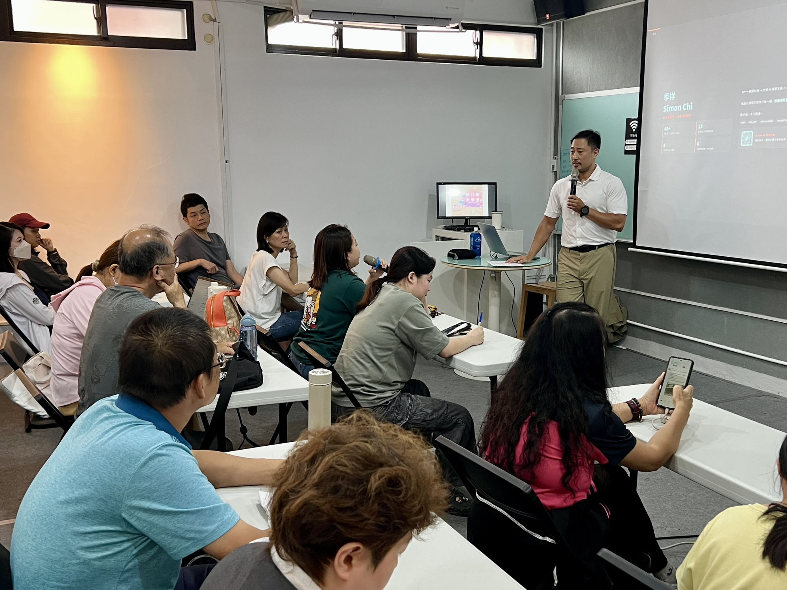
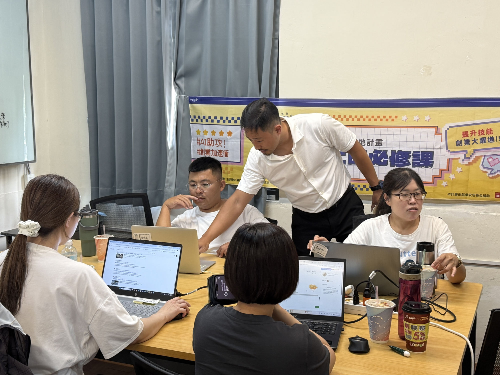

01
中小企業主
老闆的 AI 實戰工作坊
不是講概念的那種。鞋墊品牌、餐飲連鎖、電商、整脊工作室——每個老闆帶著自己的業務問題來，當天用 AI 做出第一個解法。
課綱內容即將公開
每個產業的卡點都不一樣，所以每次都要重新想過。這是我喜歡這份工作的原因。




這些是產業真實的應用需求。
六小時 Google AI 工具實戰——讓不同產業的老闆當天就能用 AI 解決自己的真實業務問題。
業務員如何在拜訪前用 AI 做客戶研究，縮短暖場時間。
病患帶著 AI 給的答案進診間——醫護如何回應、如何建立信任。
用 NotebookLM 把出版社 PDF 變成備課助手，直接出題、做差異化教材。
教學生怎麼用 AI 倡議——讓 AI 幫你思考，而不是替你思考。
小編建立品牌風格指引，讓每一篇貼文都像自己寫的，只是快十倍。
沒有技術背景的志工如何用 AI 省掉日常重複工作的一半時間。
我不只在台上講——每種合作形式的核心都是同一件事：讓你當天就有東西能用
我設計課程的標準只有一個：學員離開教室時，手上要有一個今天就能試的東西，而不是一疊漂亮的簡報。半天到兩天不等，視需求調整。
60–90 分鐘。我不做通用版簡報——每場演講前我會了解你的聽眾是誰、他們平常遇到什麼問題，然後把 AI 的話翻譯成他們聽得懂的語言。
不是來賣工具的。我會先看你現有的流程哪裡在浪費時間、哪裡有風險，再建議從哪裡開始，不建議一次全部換掉。
下面是跨產業實作累積下來的常見題目——你的場合通常會是其中兩三個的混搭。
不是講概念的那種。鞋墊品牌、餐飲連鎖、電商、整脊工作室——每個老闆帶著自己的業務問題來，當天用 AI 做出第一個解法。
課綱內容即將公開
行銷預算永遠不夠——但這不是輸給大品牌的理由。AI 讓你一個人做出以前要外包的事：定位、內容、受眾、文案。
課綱內容即將公開
拜訪客戶前準備了多少？AI 能在 10 分鐘內整理出對方公司的近況與痛點。成交率的差距，往往發生在見面之前。
課綱內容即將公開
現在的病患進診間前，很多人已經問過 ChatGPT。這不是威脅，是機會——懂得用 AI 輔助溝通的醫護人員，反而能建立更強的信任感。
課綱內容即將公開
把出版社 PDF 上傳進 NotebookLM，直接問它出題、做差異化補充、生成討論素材。它只根據你的教材回答，不會亂發揮。
課綱內容即將公開
不是叫學生不要用，而是教他們怎麼用得有水準。建立讓 AI 幫你思考、而不是替你思考的習慣。
課綱內容即將公開
針對沒有技術背景的勞工與志工設計。不談架構、不談參數，只談每天在做的事，哪些可以用 AI 省一半時間。
課綱內容即將公開
有走對的路，也有走了彎的——做完才會知道哪些建議真的能用，哪些只是漂亮話。
我不是從學術界轉過來的 AI 講師。我在 HP 和趨勢科技花了 13 年做系統和資安，然後在外商帶 AI 導入專案，後來自己創業。每一段經歷都讓我更清楚：企業在用 AI 時，真正的障礙不是技術，是不知道從哪裡開始、不知道該信任誰。
所以我在課前一定先了解聽眾。台南文化局的小編最怕「貼文寫出來都一個味」；民生醫院的護理師在意的是病患問了 AI 之後她要怎麼應對；磊山保經的業務員想知道見客戶前十分鐘能準備什麼。問題不一樣，課就不一樣。
「最常有人問我：你覺得 AI 會取代哪些工作？我的答案是：不會用 AI 的人，會被懂得用 AI 的人取代。這不是威脅，是機會——前提是你知道怎麼用。」
策略規劃、業務銷售、會議溝通、人資管理、行銷社群、財務法務……
複製貼上，今天就能用。不需要技術背景。
根據 Gartner、MITRE、MIT Sloan 等框架設計，20 題、6 大維度，即時得出您的 AI 發展等級與優先改善建議。
說清楚你的情況就好，不用準備完整需求書——我們先聊聊再說。